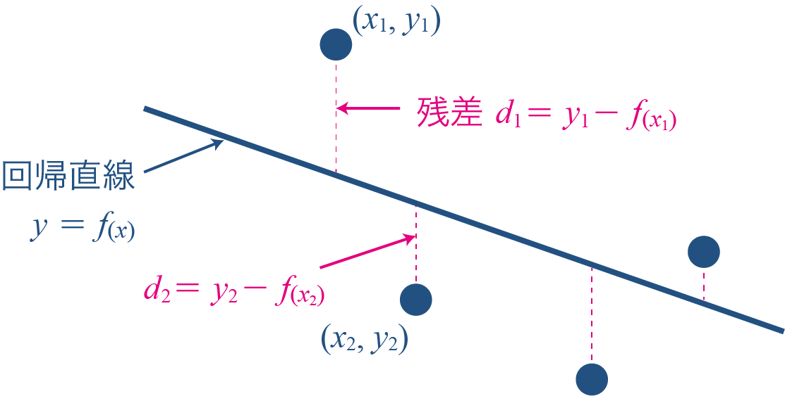
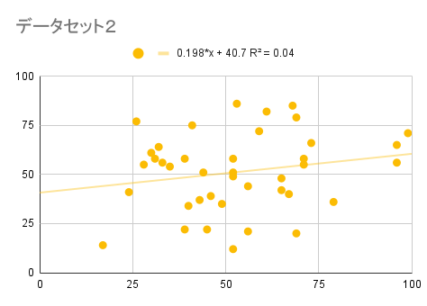
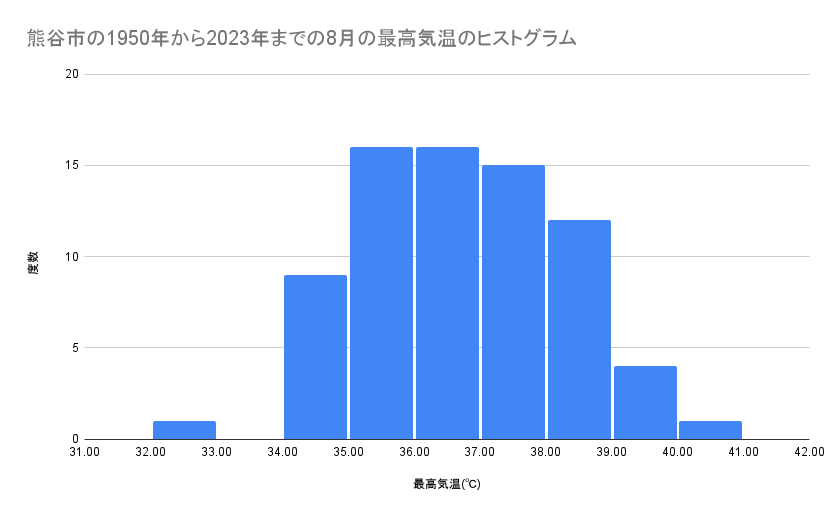

(1) ２つのデータの関係性
散布図
２つのデータの関係性を調べるために、それぞれのデータを縦軸と横軸にとり、グラフ上にプロットした図を散布図といいます。
相関
２つのデータの関係を相関といいます。
また、２つのデータの相関の強さを$-1$〜$1$の値で表した値を相関係数といいます。
- 正の相関
- 一方が増加すると他方も増加する傾向が見られるとき、２つのデータには正の相関があるといいます。
- 負の相関
- 一方が増加すると他方が減少する傾向が見られるとき、２つのデータには負の相関があるといいます。
- 無相関
- ２つのデータに相関がないとき、無相関といいます。
| 負の相関 |
無相関 |
正の相関 |
|
|
|
| 相関係数 $r = -0.9$ |
相関係数 $r = 0$ |
相関係数 $r = 0.9$ |
$r = 1$のときはすべてのプロットが$y = x$のグラフ上に、$r = -1$のときはすべてのプロットが$y = -x$のグラフ上に分布します。
相関係数の解釈
一般的に、次のような基準で相関係数を解釈されます（文献によって多少異なります）。
| ______ 〜 $-0.6$ |
強い負の相関 |
| $-0.6$ 〜 $-0.2$ |
弱い負の相関 |
| $-0.2$ 〜 $+0.2$ |
相関が弱い・無相関 |
| $+0.2$ 〜 $+0.6$ |
弱い正の相関 |
| $+0.6$ 〜 ______ |
強い正の相関 |
散布図行列
複数のデータ間の散布図や相関係数を表形式で表したものを散布図行列といいます。次の表は、散布図行列の一例で、同じデータのセルにはヒストグラムを表示し、重複するセルの片方には相関係数を表示しています。今回のように、複数の異なる変数がある場合には、このような表で可視化すると、各データの関係がわかりやすくなります。
|
長さ(km) |
流域面積(千km^2) |
平均流量(m^3/s) |
| 長さ(km) |
|
0.625 |
0.448 |
| 流域面積(千km^2) |
|
|
0.836 |
| 平均流量(m^3/s) |
|
|
（※アマゾン川とコンゴ川を除く）
|
因果関係と相関関係
因果関係とは、2つのデータ間に「原因と結果の関係がある状態」をいいます。相関関係があったとしても、因果関係があるとは限りませんので、データの解釈をするときには注意が必要です。
例えば、国ごとの「チョコレートの消費量」と「その国から出るノーベル賞受賞者の数」には正の相関が見られるという調査結果があります。これは、チョコレートを多く食べると、チョコレート内の成分により、学力が向上したり、人類の発展に貢献するようなアイデアが生まれたり、地道な研究を粘り強く行える人になり、結果的にノーベル賞を取れるようになるのでしょうか？
チョコレートを摂取すると、多少の記憶力の改善はみられるという調査結果はあるようですが、ノーベル賞を受賞するほどの効果はないでしょう。
チョコレートは嗜好品なので、経済力のある裕福な国での消費量が多くなる傾向があります。また、そのような国は教育水準が高いので、その結果、ノーベル賞を受賞できる研究者を輩出できる可能性が高くなるといえるでしょう。
このように、因果関係がないのに、別の原因によってあたかも因果関係があるように見える現象のことを疑似相関といい、その原因となる第3の要素を交絡因子といいます。
(2) 回帰分析
回帰分析とは
相関を説明するために、最もよく当てはまる数式で表現する手法を回帰分析といい、この数式を回帰式といいます。
回帰直線
相関がある散布図において、各プロットに最も近い直線を回帰直線といいます。回帰直線は$y = ax + b$と表し、$x$を説明変数、$y$を目的変数、傾き$a$と切片$b$を回帰係数といいます。この方程式を用いることで、未観測のデータの推測や要因の分析をすることができます。
最小二乗法
$x$の値によって求められる直線上の値$y$と実際の値との差を残差といいます。各プロットの残差を２乗した値の総和が最小になるような係数を求めることで、回帰式を求めることができます。このような方法を最小二乗法と言います。
このようにして求めた回帰式が、どれくらいの精度でデータに当てはまるのかを表す指標を決定係数$R^2$といい、$0$(あまり当てはまらない)〜$1$(よく当てはまる)の範囲で値をとります。最小二乗法によって得られた回帰直線の場合、相関係数の二乗と決定係数は一致します。

熊谷市の最高気温の推移
1950年から2023年までの熊谷市の8月の最高気温の推移は次のような散布図になります。この回帰直線は$y = 0.0438x - 50.4$となるので、1年で$0.0438$℃上昇していることがわかります。
このまま上昇していった場合、2100年には、$0.0438 \times 2100 - 50.4 \fallingdotseq 41.6$℃になることが予想されます。ばらつきもあるので、さらに気温の高い場合もあると予想されます。
(3) 例題
例題1
次のデータセット１〜３について、次の(1)，(2)を実施しなさい。
- xとyの相関係数を求めよ。
- 散布図を作成し、回帰直線およびその方程式を求めよ。
(1) 相関係数
相関係数を求めるときは、CORREL関数を使います。
=CORREL(範囲1, 範囲2)
(2)散布図の作成
データの範囲を選択した状態で、メニューバー ＞ 挿入 ＞ グラフを選択します。
グラフエディタで ❶設定 ＞ ❷グラフの種類 ＞ ❸散布図を選択します。
次に、グラフエディタの ❹カスタマイズ ＞ ❺系列 を開き、系列１の❻色を変更します。また、❼トレンドラインにチェックを入れ、❽ラベルで「方程式を使用」を選択すると回帰式を表示します。❾決定係数を表示するにチェックを入れると、決定係数を表示します。
データセット１の解答
相関係数：0.905
データセット２の解答
相関係数：0.201

データセット３の解答
相関係数：-0.746
例題2
表１は世界の主な河川のデータである。
- 表２の相関行列を完成せよ。
- 河川の長さと流域面積・平均流量の関係を示す散布図を作成し、回帰直線およびその方程式を求めよ。
| 河川の名称 |
長さ(km) |
流域面積(千km^2) |
平均流量(m^3/s) |
| ナイル川 | 6,650 | 2,870 | 2,800 |
| アマゾン川 | 6,516 | 7,050 | 209,000 |
| 長江 | 6,300 | 1,175 | 20,030 |
| ミシシッピ川 - ミズーリ川 | 5,971 | 3,250 | 16,200 |
| オビ川 - エルティシ川 | 5,570 | 2,430 | 12,800 |
| エニセイ川 - アンガラ川 | 5,550 | 2,700 | 17,600 |
| 黄河 | 4,667 | 745 | 2,110 |
| レナ川 | 4,400 | 2,420 | 12,100 |
| コンゴ川 | 4,371 | 3,680 | 39,610 |
| アムール川 | 4,368 | 1,855 | 11,400 |
| マッケンジー川 | 4,241 | 1,790 | 10,300 |
| メコン川 | 4,123 | 810 | 16,000 |
| ニジェール川 | 4,167 | 1,200 | 9,570 |
| パラナ川（ラプラタ川） | 3,998 | 3,100 | 14,180 |
| ヴォルガ川 | 3645 | 1,380 | 8,080 |
| マレー川 - ダーリング川 | 3,620 | 910 | 767 |
| シャットゥルアラブ川 - ユーフラテス川 | 3,596 | 884 | 856 |
| ユーコン川 | 3,184 | 850 | 6,210 |
| インダス川 | 3,180 | 960 | 7,160 |
| サンフランシスコ川 | 3,180 | 610 | 3,300 |
(1) 相関行列
相関行列とは、異なる変数の相関係数を表にしたものです。
|
長さ(km) |
流域面積(千km^2) |
平均流量(m^3/s) |
| 長さ(km) | 1 | 0.625 | 0.448 |
|---|
| 流域面積(千km^2) | 0.625 | 1 | 0.836 |
|---|
| 平均流量(m^3/s) | 0.448 | 0.836 | 1 |
|---|
(2) 散布図の作成
例題1と同様の方法で散布図を作成します。河川の長さと流域面積，河川の長さと平均流量のそれぞれについて散布図を作成してもいいですが、ここでは同じ図にまとめる方法を示します。
グラフエディタ ＞ ❶設定 ＞ ❷グラフの種類 で 散布図 を選択します。
❸データ範囲を、行頭の見出しを含んで、河川名から平均流量の列まで４列分選択します。
❹X軸に長さを指定します。
❺系列に流域面積と平均流量を指定し、ラベルに河川の名称を指定します。
次に、❻カスタマイズ ＞ 系列 ❼平均流量を選択し、❽軸に右軸を指定すると、左軸は流域面積(千km^2)，右軸は平均流量(m^3/s)となるグラフを作成することができます。

散布図の解答例
流域面積(千km^2)の回帰式：$y=0.841x-1804$
平均流量(m^3/s)の回帰式：$y=17.8x-60323$
例題3
表１は熊谷市の1950年から2023年までの8月の最高気温である。
- 表２に度数分布表を完成させよ。
- 表３に最大値・最小値・四分位数を求めよ。
- 表４に平均値・分散・標準偏差を求めよ。
- 表５に西暦と最高気温の相関係数を求めよ。
- ヒストグラムを作成せよ。
- 横軸を西暦(年)，縦軸を８月の最高気温(℃)とする散布図を作成し、回帰直線およびその方程式を求めよ。
(5) ヒストグラムの解答

(6) 最高気温の推移の解答
回帰式：$y=0.0438x-50.4$